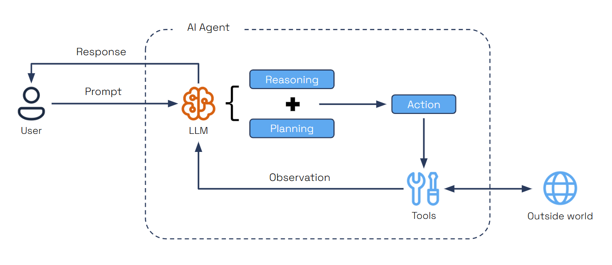
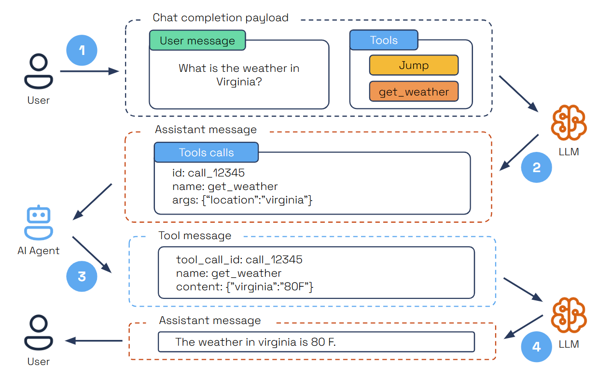
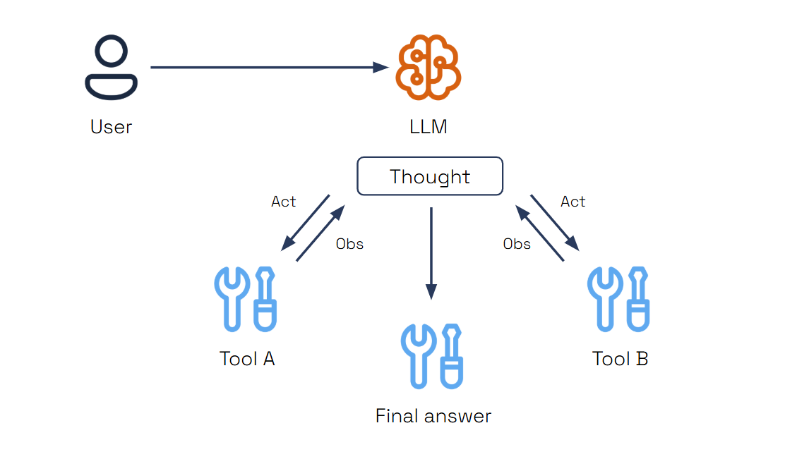

Agents¶
Agents in Dapr Agents are autonomous systems powered by Large Language Models (LLMs), designed to execute tasks, reason through problems, and collaborate within workflows. Acting as intelligent building blocks, agents seamlessly combine LLM-driven reasoning with tool integration, memory, and collaboration features to enable scalable, production-grade agentic systems.

Core Features¶
1. LLM Integration¶
Dapr Agents provides a unified interface to connect with LLM inference APIs. This abstraction allows developers to seamlessly integrate their agents with cutting-edge language models for reasoning and decision-making.
2. Structured Outputs¶
Agents in Dapr Agents leverage structured output capabilities, such as OpenAI’s Function Calling, to generate predictable and reliable results. These outputs follow JSON Schema Draft 2020-12 and OpenAPI Specification v3.1.0 standards, enabling easy interoperability and tool integration.
3. Tool Selection¶
Agents dynamically select the appropriate tool for a given task, using LLMs to analyze requirements and choose the best action. This is supported directly through LLM parametric knowledge and enhanced by Function Calling, ensuring tools are invoked efficiently and accurately.
4. MCP Support¶
Dapr Agents includes built-in support for the Model Context Protocol (MCP), enabling agents to dynamically discover and invoke external tools through a standardized interface. Using the provided MCPClient, agents can connect to MCP servers via two transport options: stdio for local development and sse for remote or distributed environments.
Once connected, the MCP client fetches all available tools from the server and prepares them for immediate use within the agent’s toolset. This allows agents to incorporate capabilities exposed by external processes—such as local Python scripts or remote services without hardcoding or preloading them. Agents can invoke these tools at runtime, expanding their behavior based on what’s offered by the active MCP server.
5. Memory¶
Agents retain context across interactions, enhancing their ability to provide coherent and adaptive responses. Memory options range from simple in-memory lists for managing chat history to vector databases for semantic search and retrieval. Dapr Agents also integrates with Dapr state stores, enabling scalable and persistent memory for advanced use cases from 28 different state store providers.
6. Prompt Flexibility¶
Dapr Agents supports flexible prompt templates to shape agent behavior and reasoning. Users can define placeholders within prompts, enabling dynamic input of context for inference calls. By leveraging prompt formatting with Jinja templates, users can include loops, conditions, and variables, providing precise control over the structure and content of prompts. This flexibility ensures that LLM responses are tailored to the task at hand, offering modularity and adaptability for diverse use cases.
7. Agent Services¶
Agents are exposed as independent services using FastAPI and Dapr applications. This modular approach separates the agent’s logic from its service layer, enabling seamless reuse, deployment, and integration into multi-agent systems.
8. Message-Driven Communication¶
Agents collaborate through Pub/Sub messaging, enabling event-driven communication and task distribution. This message-driven architecture allows agents to work asynchronously, share updates, and respond to real-time events, ensuring effective collaboration in distributed systems.
9. Workflow Orchestration¶
Dapr Agents supports both deterministic and event-driven workflows to manage multi-agent systems via Dapr Workflows. Deterministic workflows provide clear, repeatable processes, while event-driven workflows allow for dynamic, adaptive collaboration between agents in centralized or decentralized architectures.
Agent Types¶
Dapr Agents provides two agent types, each designed for different use cases:
Agent¶
The Agent class is a conversational agent that manages tool calls and conversations using a language model. It provides immediate, synchronous execution with built-in conversation memory and tool integration capabilities.
Key Characteristics: - Synchronous execution with immediate responses - Built-in conversation memory and tool history tracking - Iterative conversation processing with max iteration limits - Direct tool execution and result processing - Graceful shutdown support with cancellation handling
When to use: - Building conversational assistants that need immediate responses - Scenarios requiring real-time tool execution and conversation flow - When you need direct control over the conversation loop - Quick prototyping and development of agent interactions
Example Usage:
from dapr_agents import Agent
from dapr_agents.llm.dapr import DaprChatClient
from dapr_agents.memory import ConversationDaprStateMemory
# Create an incident intake agent
agent = Agent(
name="IncidentIntakeBot",
role="Incident Reporting Assistant",
instructions=[
"Collect detailed operational incident information",
"Retain user inputs across sessions for audit and recovery",
"Use memory to guide follow-up questions based on previous input",
"Update incident records as new details are provided",
],
tools=[incident_lookup_tool, escalate_incident_tool, update_incident_tool],
)
# Conversation history is preserved across calls
agent.run("first input")
agent.run("second input")
DurableAgent¶
The DurableAgent class is a workflow-based agent that extends the standard Agent with Dapr Workflows for long-running, fault-tolerant, and durable execution. It provides persistent state management, automatic retry mechanisms, and deterministic execution across failures.
Key Characteristics: - Workflow-based execution using Dapr Workflows - Persistent workflow state management across sessions and failures - Automatic retry and recovery mechanisms - Deterministic execution with checkpointing - Built-in message routing and agent communication - Supports complex orchestration patterns and multi-agent collaboration
When to use: - Multi-step workflows that span time or systems - Tasks requiring guaranteed progress tracking and state persistence - Scenarios where operations may pause, fail, or need recovery without data loss - Complex agent orchestration and multi-agent collaboration - Production systems requiring fault tolerance and scalability
Example Usage:
from dapr_agents import DurableAgent
from dapr_agents.llm.dapr import DaprChatClient
from dapr_agents.memory import ConversationDaprStateMemory
# Create an onboarding workflow agent
durable_agent = DurableAgent(
name="OnboardingWorkflowBot",
role="Employee Onboarding Coordinator",
instructions=[
"Guide and automate multi-step onboarding processes",
"Track progress and retain state across sessions and failures",
"Coordinate with tools to provision accounts, access, and resources",
],
llm=OpenAIChatClient(),
tools=[
provision_email_account,
setup_github_access,
assign_kubernetes_namespace,
configure_slack_workspace,
request_hardware_kit,
],
message_bus_name="messagepubsub",
state_store_name="workflowstatestore",
state_key="workflow_state",
agents_registry_store_name="agentstatestore",
agents_registry_key="agents_registry",
),
Agent Patterns¶
In Dapr Agents, Agent Patterns define the built-in loops that allow agents to dynamically handle tasks. These patterns enable agents to iteratively reason, act, and adapt, making them flexible and capable problem-solvers. By embedding these patterns, Dapr Agents ensures agents can independently complete tasks without requiring external orchestration.
Tool Calling¶
Tool Calling is an essential pattern in autonomous agent design, allowing AI agents to interact dynamically with external tools based on user input. One reliable method for enabling this is through OpenAI's Function Calling capability. This feature allows developers to describe functions to models trained to generate structured JSON objects containing the necessary arguments for tool execution, based on user queries.
How It Works¶

- The user submits a query specifying a task and the available tools.
- The LLM analyzes the query and selects the right tool for the task.
- The LLM provides a structured JSON output containing the tool’s unique ID, name, and arguments.
- The AI agent parses the JSON, executes the tool with the provided arguments, and sends the results back as a tool message.
- The LLM then summarizes the tool's execution results within the user’s context to deliver a comprehensive final response.
Info
Steps 2-4 can be repeated multiple times, depending on the task's complexity.
This pattern is highly flexible and supports multiple iterations of tool selection and execution, empowering agents to handle dynamic and multi-step tasks more effectively.
ReAct¶
The ReAct (Reason + Act) pattern was introduced in 2022 to enhance the capabilities of LLM-based AI agents by combining reasoning with action. This approach allows agents not only to reason through complex tasks but also to interact with the environment, taking actions based on their reasoning and observing the outcomes. ReAct enables AI agents to dynamically adapt to tasks by reasoning about the next steps and executing actions in real time.
How It Works¶

- Thought (Reasoning): The agent analyzes the situation and generates a thought or a plan based on the input.
- Action: The agent takes an action based on its reasoning.
- Observation: After the action is executed, the agent observes the results or feedback from the environment, assessing the effectiveness of its action.
Info
These steps create a cycle that allows the agent to continuously think, act, and learn from the results.
The ReAct pattern gives the agent the flexibility to adapt based on task complexity:
- Deep reasoning tasks: The agent goes through multiple cycles of thought, action, and observation to refine its responses.
- Action-driven tasks: The agent focuses more on timely actions and thinks critically only at key decision points.
ReAct empowers agents to navigate complex, real-world environments efficiently, making them better suited for scenarios that require both deep reasoning and timely actions.
Agent Collaboration using Workflows¶
While patterns empower individual agents, workflows enable the coordination of multiple agents to achieve shared goals. In Dapr Agents, workflows serve as a higher-level framework for organizing how agents collaborate and distribute tasks.
Workflows can orchestrate agents, each equipped with their own built-in patterns, to handle different parts of a larger process. For example, one agent might gather data using tools, another might analyze the results, and a third might generate a report. The workflow manages the communication and sequencing between these agents, ensuring smooth collaboration.
Interestingly, workflows can also define loops similar to agent patterns. Instead of relying on an agent’s built-in tool-calling loop, you can design workflows to orchestrate tool usage, reasoning, and action. This gives you the flexibility to use workflows to define both multi-agent collaboration and complex task handling for a single agent.
Random Workflow¶
In a Random Workflow, the next agent to handle a task is selected randomly. This approach:
- Encourages diversity in agent responses and strategies.
- Simplifies orchestration in cases where task assignment does not depend on specific agent roles or expertise.
- Random workflows are particularly useful for exploratory tasks or brainstorming scenarios where agent collaboration benefits from randomness.
Round Robin Workflow¶
The Round Robin Workflow assigns tasks sequentially to agents in a fixed order. This method:
- Ensures equal participation among agents.
- Is ideal for scenarios requiring predictable task distribution, such as routine monitoring or repetitive processes.
- For example, in a team of monitoring agents, each agent takes turns analyzing incoming data streams in a predefined order.
LLM-Based Workflow¶
The LLM-Based Workflow relies on the reasoning capabilities of an LLM to dynamically choose the next agent based on:
- Task Context: The nature and requirements of the current task.
- Chat History: Previous agent responses and interactions.
- Agent Metadata: Attributes like expertise, availability, or priorities.
This approach ensures that the most suitable agent is selected for each task, optimizing collaboration and efficiency. For example, in a multi-agent customer support system, the LLM can assign tasks to agents based on customer issues, agent expertise, and workload distribution.